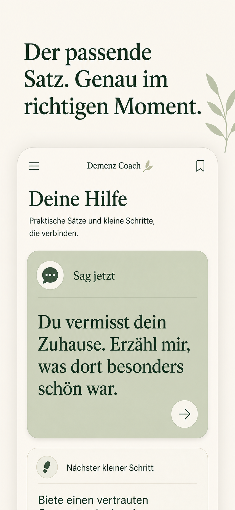
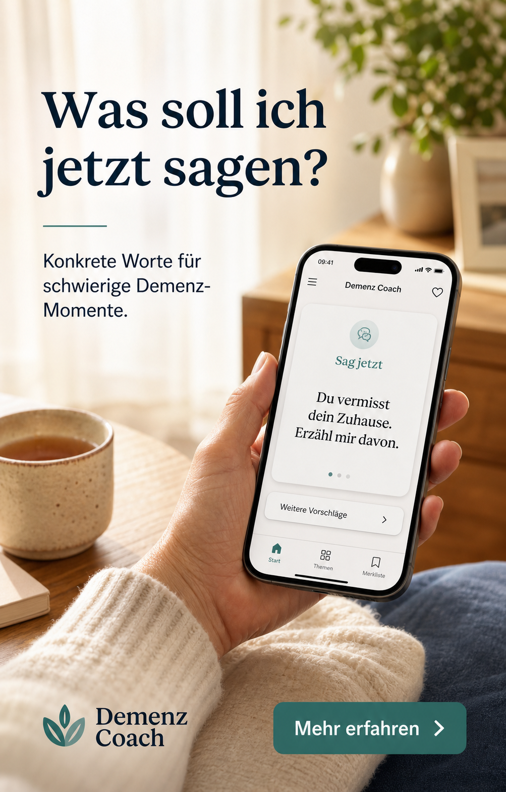

Wisse, was du
sagen kannst.
Ruhige, konkrete Unterstützung für schwierige Demenz-Momente – genau dann, wenn dir selbst die Worte fehlen.
- Klare Sätze statt langer Erklärungen
- Ruhig, verständlich und ohne Fachsprache

Kein medizinischer Fachjargon
Keine komplizierte Navigation
Ein klarer nächster Schritt
Drei kleine Schritte.
Mehr Orientierung im Moment.
-
01
Situation beschreiben
Schreibe in ein oder zwei Sätzen, was gerade passiert.
-
02
Passenden Satz erhalten
Du bekommst eine konkrete Formulierung, die du direkt verwenden kannst.
-
03
Klein weitergehen
Ein verständlicher nächster Schritt hilft dir, ruhig zu handeln.
Nicht mehr allein mit der Frage: „Was sage ich jetzt?“
Demenz Coach hilft dir, Gefühle hinter Aussagen wahrzunehmen, unnötigen Widerspruch zu vermeiden und einen ruhigen nächsten Schritt zu finden.
- SoforthilfeKurze Sätze für akute Situationen
- Typische SituationenVon Wiederholungsfragen bis Unruhe am Abend
- Ruhig lernenDrei-Minuten-Training und persönlicher 7-Tage-Plan

Du musst nicht immer sofort die perfekte Antwort wissen. Manchmal reicht ein ruhiger Satz und ein kleiner nächster Schritt.
Die Haltung hinter Demenz Coach
Gut zu wissen.
Demenz Coach ist bewusst einfach gehalten und unterstützt Angehörige bei Kommunikation und Orientierung.
Ersetzt die App medizinische Beratung?
Nein. Demenz Coach ist ein Kommunikations- und Angehörigen-Coach. Die App stellt keine Diagnosen und gibt keine Empfehlungen zu Medikamenten.
Kann ich die vorgeschlagenen Sätze speichern?
Ja. Hilfreiche Sätze kannst du merken und später schnell wiederfinden.
Ist die App auch für akute Notfälle gedacht?
Nein. Bei unmittelbarer Gefahr oder einem medizinischen Notfall wende dich bitte sofort an die örtliche Notfallhilfe.
Ein klarer Satz kann den nächsten Moment leichter machen.
Entdecke ruhige, konkrete Unterstützung für deinen Pflegealltag.